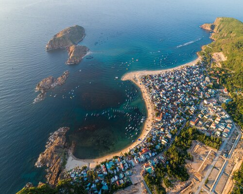

Quy Nhơn - Bãi biển hòa mình giữa thiên nhiên hoang sơ
Chào mừng bạn đến với blog hôm nay, nơi chúng ta sẽ đặt chân đến một thành phố biển tuyệt vời tại miền Trung Việt Nam - Quy Nhơn. Quy Nhơn, thuộc tỉnh Bình Định, nổi tiếng với bãi biển dịu dàng, nước biển trong xanh và văn hóa độc đáo của người dân địa phương. Với bờ biển dài, cát trắng mịn và những đợt sóng êm đềm, Quy Nhơn là điểm đến lý tưởng cho những chuyến nghỉ dưỡng thư giãn.
Bãi Trung Lương và Bãi Xep là hai trong số những bãi biển tuyệt vời nhất, nơi du khách có thể tận hưởng không khí biển trong lành và tham gia vào các hoạt động như lướt sóng, đua thuyền kayak hay đơn giản là tận hưởng bức tranh hoàng hôn tuyệt vời. Ngoài ra, Quy Nhơn còn nổi tiếng với những di tích lịch sử và văn hóa như chùa Long Khanh, đình Thị Nại và đảo Ky Co. Chùa Long Khanh mang đến không gian linh thiêng với kiến trúc độc đáo, trong khi đình Thị Nại là nơi lưu giữ nhiều huyền thoại và truyền thống văn hóa. Khám phá ẩm thực Quy Nhơn cũng là một phần không thể thiếu của trải nghiệm du lịch. Những món hải sản tươi ngon như chả cá, bún cá, bún mắm và bánh tráng trộn là những món ăn ngon nức tiếng và chỉ có ở đây. Với không gian biển xanh, bờ cát trắng và sự giao thoa giữa văn hóa truyền thống và hiện đại, Quy Nhơn không chỉ là điểm đến cho những chuyến nghỉ dưỡng mà còn là nơi để bạn tận hưởng cuộc sống và khám phá những điều mới lạ. Hãy để Quy Nhơn làm phần không thể thiếu của chuyến hành trình của bạn, nơi mà biển cả gặp gỡ với văn hóa độc đáo.